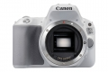

器材库 > APS及其以下画幅可换镜头数码相机 > EOS 200D

规格总览
产品类型
APS画幅可换镜头数码相机
日本地区型号
EOS Kiss X9
北美地区型号
EOS Rebel SL2
发布日期
2017-06-29
影像规格
影像传感器
CMOS
影像传感器尺寸
22.3×14.9mm
有效像素
2420万
影像处理器
DIGIC 7
静态图像格式
JPEG, RAW, RAW+JPEG
静态图像尺寸
L（大）：2400万像素（6000×4000） M（中）：约1060万像素（3984×2656） S1（小1）：约590万像素（2976×1984） S2（小2）：约380万像素（2400×1600） RAW：2400万像素（6000×4000）
画幅比
3:2, 4:3, 16:9, 1:1
短片格式
MPEG4-AVC/H.264
短片尺寸
1920×1080（全高清）：59.94p/50p/29.97p/25p/23.98p1280×720（高清）：59.94p/50p/29.97p/25p640×480（标清）：29.97p/25p
音频格式
AAC
除尘系统
自动、手动、添加除尘数据
镜头和对焦
镜头卡口
Canon EF
兼容镜头
佳能EF系列镜头（包括EF-S、不包括EF-M镜头）（35毫米换算焦距约为镜头焦距的1.6倍）
对焦系统类型
TTL辅助影像重合，使用专用自动对焦感应器的相差检测
对焦点
9点（中央十字型自动对焦点，对应F2.8光束检测纵向线条）
对焦模式
单次自动对焦、人工智能伺服自动对焦、人工智能自动对焦、手动对焦
AF辅助灯/光
有
手动对焦
支持
曝光控制
测光系统
63区TTL全开光圈测光
测光模式
评价测光, 点测光, 局部测光, 中央重点平均测光
测光范围
1EV~20EV
拍摄模式
基本拍摄区：场景智能自动、闪光灯关闭、创意自动、特殊场景模式、创意滤镜模式创意拍摄区：程序自动曝光、快门优先自动曝光、光圈优先自动曝光、手动曝光
场景模式
人像、合影、风光、运动、儿童、微距、食物、烛光、夜景人像、手持夜景、HDR逆光控制
创意滤镜
颗粒黑白、柔焦、鱼眼效果、水彩画效果、玩具相机效果、微缩景观效果、HDR标准绘画风格、HDR浓艳绘画风格、HDR油画风格、HDR浮雕画风格
快门类型
电子控制焦平面快门
快门速度
1/4000至30秒（总快门速度范围。可用范围随拍摄模式各异。）、B门
闪光同步速度
1/200秒
曝光补偿
±5EV以1/3或1/2EV级调整
自动曝光锁
有
ISO感光度
基本拍摄区模式：ISO感光度自动设置创意拍摄区模式（P,Tv,Av,M）：自动ISO、在ISO 100～25600之间手动设置（以1级为单位）、或ISO感光度扩展到“H”（相当于ISO 51200）
白平衡
自动（氛围优先）、自动（白色优先）、预设（日光、阴影、阴天、钨丝灯、白色荧光灯、闪光灯）、用户自定义 具备白平衡校正和白平衡包围曝光※支持闪光色温信息传输
自拍
2秒、10秒
连拍
最高约5张/秒
闪光灯
内置闪光灯
弹出式
闪光指数
约9.8（ISO 100，以米为单位）
闪光补偿
±2EV以1/3或1/2EV级调整
外接闪光灯
兼容EX系列闪光灯
取景器/显示屏
取景器
眼平五面镜
取景范围
95%
取景放大倍率
约0.87倍
屈光度调节范围
约-3.0～+1.0 m-1（dpt）
对焦屏
固定式，精确磨砂
反光镜
快回型
景深预视
有
LCD类型
彩色TFT LCD
LCD尺寸
3.0英寸
LCD像素
约104万
LCD特性
触摸屏, 翻转屏
亮度调节级数
手动（7级）
文件输入/输出
记录媒介
SD/SDHC, SDXC
无线功能
Wi-Fi, NFC, 蓝牙
支持打印协议
DPOF
电源
电池
电池LP-E17（1块）
续航能力
使用取景器拍摄：23℃时约650张、0℃时约620张使用实时显示拍摄：23℃时约260张、0℃时约240张
机身规格
颜色
银色, 黑色, 白色
尺寸
122.4×92.6×69.8mm
重量
黑色款：406g银色款：407g白色款：409g
其它
工作温度
0~40℃
工作湿度
85%
zgjzp2018-06-06 16:134.38 分
操作性 4.50功能性 5.00美观性 4.00趣味性 5.00耐用性 3.50性价比 4.00解像力 4.50色彩还原 4.50
产品图 / 样片
EOS 200D
评测 / 相关文章
- 详细内容 （存档）
- ［试用］迎着海风 带着EOS 200D去海岛休闲游 （存档）
- ［试用］佳能EOS 200D纪录雾都山城 （存档）
- ［试用］佳能EOS 200D带你走入影像日记 （存档）
- ［资讯］佳能EOS 200D官方样片欣赏 （存档）
- ［资讯］佳能EOS 6D Mark II发布会现场实录 （存档）